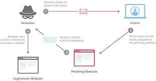
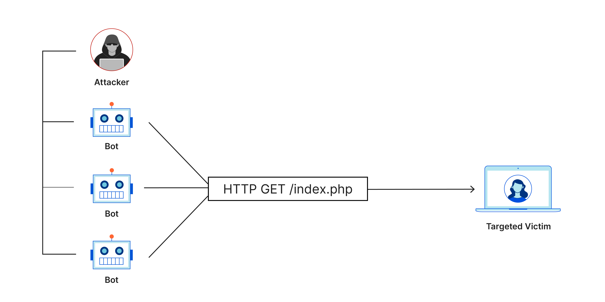
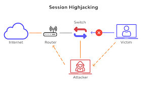
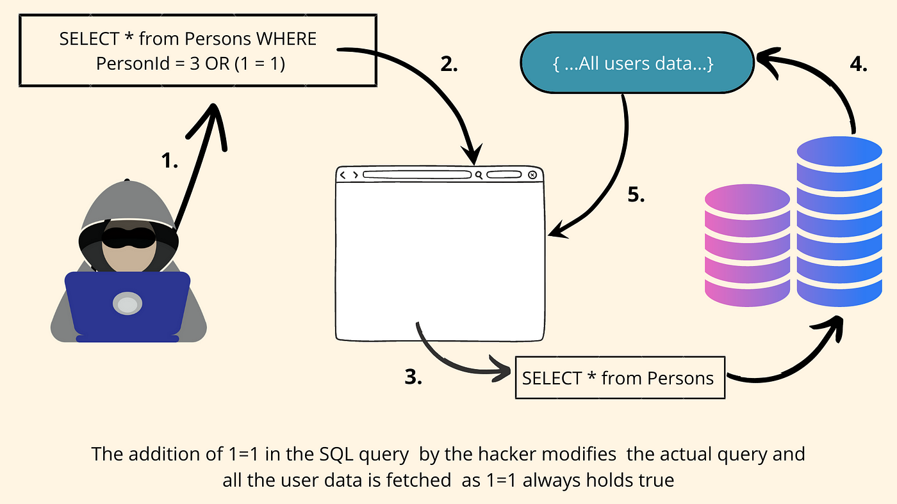

Phishing Attacks Explained
Phishing is a cyberattack where attackers trick people into providing sensitive information, like passwords or financial details, by pretending to be a legitimate entity. These attacks often occur via email or instant messages and can support other malicious actions like on-path attacks and cross-site scripting. Below are common types of phishing scams:

Cloudflare,Source Website
Common Types of Phishing Scams
1. Advanced-Fee Scam
Popularized by the "Nigerian prince" email, this scam promises a large sum of money in exchange for a small upfront fee. Once the fee is paid, the promised money never arrives. This scam has existed for over a century, originally known as the "Spanish Prisoner" scam.
How to Avoid: Don't respond to requests for money from unknown sources. If it sounds too good to be true, it probably is.
2. Account Deactivation Scam
Attackers create urgency by claiming an important account (e.g., a bank account) will be deactivated unless immediate action is taken. Victims are tricked into providing login credentials on a fake site.
How to Avoid: Always verify by directly visiting the official website. Check for secure URLs (starting with "https") before entering any credentials.
3. Website Forgery Scam
Attackers create fake websites that mimic legitimate ones, tricking users into entering sensitive information. This is often combined with other phishing scams.
How to Avoid: Double-check the URL, and never enter information on a site that seems suspicious or is not secure.
What is Spyware?
Spyware is a type of malicious software that secretly collects information from a device without the user's knowledge. It can target phones, computers, and any device connected to the internet, allowing unauthorized access to personal data.
How Does Spyware Work?
Spyware can infect devices through:
- 1-Click Infection: Clicking on a malicious link sent via email, text, or social media.
- Zero-Click Infection: The device gets infected without any user interaction.
What Happens When Your Device is Infected?
Once spyware is installed, it can:
- Track your location
- Access conversations, emails, and contacts
- Activate your microphone to listen to nearby conversations
How Does Spyware Affect Human Rights?
Spyware can violate privacy and freedom of expression. It can be used for blackmail, harassment, and intimidation, especially against those who face discrimination.
How to Protect Yourself from Spyware?
While it's hard to be fully protected, you can take steps to reduce the risk:
- Keep your software and devices updated
- Enable high-security modes (like Apple’s Lockdown Mode)
- Be cautious when clicking on links from unknown sources
- Monitor your device for unusual activity
- Use a reputable VPN to enhance security

Source Website
What is a Trojan Virus?
A Trojan, often called a Trojan virus, is malware disguised as a legitimate file or program. It tricks users into installing it, allowing hackers to access their device without detection. Trojans can be used to spy, steal data, or infect other programs.
Why are Trojans Dangerous?
Trojans are dangerous because users unknowingly install them, allowing hackers to secretly exploit vulnerabilities. Once inside, Trojans can steal data, commit fraud, or cause damage, often without the user realizing it.
Trojan vs. Virus: What's the Difference?
- Viruses: Self-replicate and spread by attaching to legitimate files or programs.
- Trojans: Do not replicate but rely on tricking users into installing them. Once active, they perform harmful actions.
Types of Trojan Viruses
- Backdoor Trojan: Grants hackers unauthorized access to your system.
- Downloader Trojan: Downloads more malware onto the infected system.
- Infostealer Trojan: Steals sensitive data like passwords and credit card info.
- Remote Access Trojan (RAT): Gives attackers full control over your device.
- DDoS Attack Trojan: Launches attacks to overwhelm and crash networks.
How to Remove a Trojan
- Disconnect from the internet to prevent further damage.
- Install antivirus software like Norton AntiVirus Plus.
- Run a full system scan to detect and quarantine malicious files.
- Delete infected files as directed by the antivirus tool.
- Update your software to close security gaps.
- Download only from trusted sources to avoid future infections.
- Use a firewall to block unauthorized access.
What is a Computer Virus?
A computer virus is malicious software designed to replicate and spread from one computer to another. Like a biological virus, it infects systems, causing damage and disrupting operations. Viruses often attach themselves to files or programs, allowing them to spread to other devices.
How Do Computer Viruses Spread?
- Infection: A virus attaches itself to a file, program, or online link. It can spread through email attachments, downloads, or scam links on social media.
- Execution: The virus stays dormant until the user runs the infected file or program, activating the virus code.
- Spread: Once active, the virus can spread to other computers on the same network, corrupt files, steal data, or cause other harm.
Signs of a Computer Virus
- Frequent pop-ups: Suspicious pop-up windows urging you to visit strange sites or download fake antivirus software.
- Slow performance: Your computer is slower than usual.
- System crashes: Frequent crashes or freezes, or trouble restarting your device.
- Unknown programs: New or unfamiliar software appears on your desktop without your knowledge.
- Password issues: Unprompted password changes that prevent you from logging in.
- Changed settings: System settings are altered without your input.
Types of Computer Viruses
- Boot Sector Virus: Infects your computer when you boot up, often spreading through USB drives.
- Web Scripting Virus: Exploits vulnerabilities in web pages to infect your system.
- Browser Hijacker: Takes over your browser, redirecting you to compromised websites.
- Resident Virus: Infects system memory and can activate anytime the system runs.
- Direct Action Virus: Remains dormant until you execute the infected file.
- Polymorphic Virus: Alters its code with each execution to evade antivirus detection.
- File Infector Virus: Embeds malicious code into executable files.
- Multipartite Virus: Spreads in multiple ways, affecting both programs and system sectors.
- Macro Virus: Infects documents, often spreading through email attachments.
How to Avoid Computer Viruses
- Use Antivirus Software: Install and use trusted antivirus software like Norton AntiVirus Plus, which automatically updates to protect against new threats.
- Enable Automatic Scanning: Set your antivirus to scan email attachments and downloads automatically.
- Keep Software Updated: Regularly update your operating system and software to patch vulnerabilities.
- Be Cautious with Email Attachments: Don’t open attachments or click links from unknown senders, and scan them with your antivirus software first.
- Avoid Pop-ups: Don’t click on unwanted pop-ups, and avoid unsafe websites.
- Download Safely: Only download files from trusted sources and scan them before opening.
What is a Computer Worm?
A computer worm is a type of malware that can self-replicate and spread across networks without any human intervention. Unlike some other malware, worms do not need to attach themselves to an existing program. Instead, they exploit vulnerabilities in systems, often spreading through internet connections or local networks (LANs).
How Does a Computer Worm Spread?
- Phishing: Worms can be delivered via fraudulent emails with corrupt attachments or malicious links.
- Spear-Phishing: Targeted attacks that carry dangerous malware like ransomware cryptoworms.
- Networks: Worms can self-replicate across networks, moving from one system to another through shared access points.
- Security Holes: Some worms exploit software vulnerabilities to infiltrate systems.
- File Sharing: Peer-to-peer (P2P) networks can carry worms, infecting systems during file transfers.
- Social Networks: Platforms like MySpace have been affected by worms that spread through user interactions.
- Instant Messengers (IMs): Worms can spread through text messages or IM platforms like Internet Relay Chat (IRC).
- External Devices: Worms can infect USB drives, external hard drives, and other removable media.
What Does a Computer Worm Do?
- Drop Other Malware: Worms can introduce additional malware like spyware or ransomware.
- Consume Bandwidth: Worms can overload your network by consuming excessive bandwidth.
- Delete Files: Worms can erase important files from your system.
- Overload Networks: Worms can cause network slowdowns or crashes by generating excessive traffic.
- Steal Data: Worms can extract sensitive information from your system.
- Open a Backdoor: Worms can create a backdoor for hackers to remotely access your system.
- Deplete Hard Drive Space: Worms can fill up your hard drive by replicating themselves.
Symptoms of a Computer Worm
- Slow Performance: Your computer may slow down significantly.
- Crashes and Freezes: Frequent crashes or freezing of your system.
- Error Messages: Unexplained error messages.
- Missing or Corrupted Files: Files may disappear or become corrupted.
- Depleted Hard Drive Space: Your hard drive's space may rapidly decrease without explanation.
- Firewall Alerts: Your firewall may alert you to unauthorized access attempts.
How to Stop Computer Worms
- Use Antivirus and Anti-Malware Software: Install and regularly update reliable security software to detect and remove worms.
- Avoid Suspicious Links and Emails: Be cautious of suspicious emails, links, messages, websites, and file-sharing networks.
- Update Software: Regularly update your operating system and software to patch vulnerabilities that worms can exploit.
- Practice Safe Computing: Be mindful of external devices, and scan USB drives and other removable media before use.
What is a Data Breach?
A data breach is a security incident where unauthorized individuals gain access to sensitive or confidential information. This can include personal data such as Social Security numbers, bank account details, healthcare records, and corporate information like customer records, intellectual property, and financial data.
Not all cyberattacks are considered data breaches. For example, a distributed denial of service (DDoS) attack that overwhelms a website does not involve unauthorized access to data, so it is not classified as a data breach. However, a ransomware attack that locks up a company's customer data and threatens to leak it unless a ransom is paid is considered a data breach. Physical theft of data storage devices or paper files is also classified as a data breach.
The Cost of a Data Breach
According to IBM's Cost of a Data Breach report, the global average cost of a data breach is $4.88 million. The cost can vary depending on the industry and location. For instance, in the U.S., the average cost is $9.36 million, while in India, it is $2.35 million.
Industries that are heavily regulated, such as healthcare, finance, and the public sector, often face higher costs due to fines and penalties. Healthcare data breaches are the most expensive, averaging $9.77 million.
The costs associated with a data breach come from several factors, including:
- Lost Business: On average, organizations lose $1.47 million in business, revenue, and customers following a breach.
- Detection and Containment: This cost is $1.63 million on average.
- Post-Breach Expenses: These include fines, legal fees, and providing credit monitoring, costing an average of $1.35 million.
- Notification Costs: Reporting the breach to customers and regulators costs $430,000 on average.
Why Data Breaches Happen
Data breaches can occur due to:
- Innocent Mistakes: For example, an employee might accidentally email confidential information to the wrong person.
- Malicious Insiders: These could be disgruntled or greedy employees who want to harm the company or profit from its data.
- Hackers: Malicious outsiders commit intentional cybercrimes to steal data, either acting alone or as part of an organized ring. Financial gain is usually the primary motivation, such as stealing credit card information or personal data for identity theft.
How Data Breaches Happen
- Research: The attacker identifies a target and looks for vulnerabilities in either the system or human factors, such as employees susceptible to social engineering.
- Attack: The attacker initiates the attack using a chosen method, like spear-phishing, exploiting system vulnerabilities, or using stolen login credentials.
- Compromise Data: Once inside the system, the attacker steals, destroys, or locks the data, depending on their objectives.

Source Website
Common Data Breach Attack Vectors
- Stolen or Compromised Credentials: Account for 16% of data breaches. Hackers often obtain these credentials through brute force attacks, the dark web, or social engineering.
- Social Engineering Attacks: Phishing is the most common type, also accounting for 16% of breaches. These scams trick users into sharing credentials or downloading malware.
- Ransomware: This type of malware holds data hostage and costs an average of $4.91 million per breach, excluding ransom payments.
- System Vulnerabilities: Cybercriminals can exploit weaknesses in IT assets like websites, operating systems, and APIs.
- SQL Injection: Hackers input malicious code into unsecured website databases to extract private information.
- Human Error and IT Failures: Misconfigured systems, unpatched vulnerabilities, and lost devices account for nearly a quarter of all breaches.
- Physical Security Compromises: Attackers may steal physical devices or documents containing sensitive data.
Regulatory and Legal Requirements
Many jurisdictions have strict regulations on data breach notifications. For example, the U.S. Cyber Incident Reporting for Critical Infrastructure Act of 2022 (CIRCIA) requires certain industries to report cybersecurity incidents to the Department of Homeland Security within 72 hours. Additionally, the General Data Protection Regulation (GDPR) requires companies dealing with EU citizens to report breaches within 72 hours.
Overview of DDoS Attacks
A Distributed Denial-of-Service (DDoS) attack is a cyber attack that aims to disrupt the normal functioning of a targeted server, service, or network by overwhelming it with a flood of internet traffic. This flood of traffic is generated by multiple compromised systems, making it difficult to trace and block the source of the attack.
How DDoS Attacks Work
- Compromise Systems: Attackers first infect multiple computers, devices, or IoT systems with malicious software, turning them into a botnet. Each of these compromised systems can be used to send traffic to the target.
- Launch Attack: The attacker directs the botnet to send a massive volume of traffic to the target system. This traffic can come in the form of requests, data packets, or other types of network traffic.
- Overwhelm Target: The sheer volume of traffic overwhelms the target's server, network, or infrastructure, causing it to slow down significantly or become completely unavailable.
What is a distributed denial-of-service (DDoS) attack?

Cloudflare,Source Website
Types of DDoS Attacks
- Volume-Based Attacks: These attacks aim to consume the bandwidth of the target by sending large amounts of data. Examples include UDP floods and ICMP floods.
- Protocol Attacks: These exploit weaknesses in network protocols to exhaust resources. Examples include SYN floods and Ping of Death attacks.
- Application Layer Attacks: These target specific applications or services to exhaust server resources. Examples include HTTP floods and Slowloris attacks.
Impact of DDoS Attacks
- Service Disruption: The primary impact is the disruption of service, causing websites or online services to become inaccessible.
- Financial Loss: Businesses can incur significant financial losses due to downtime, lost revenue, and the cost of mitigating the attack.
- Reputation Damage: Prolonged outages or service disruptions can harm an organization's reputation and customer trust.
Mitigation Strategies
- Traffic Filtering: Use of firewalls and intrusion prevention systems to filter out malicious traffic.
- Rate Limiting: Implementing rate limits on requests to prevent overload.
- Redundancy: Distributing services across multiple servers or data centers to handle excess traffic.
- DDoS Protection Services: Leveraging specialized services that provide DDoS mitigation solutions.
DDoS attacks continue to evolve, with attackers developing more sophisticated methods to bypass traditional defenses. Staying informed about the latest attack vectors and mitigation techniques is crucial for effective protection.
Authentication Vulnerabilities
Authentication vulnerabilities are critical security weaknesses that can allow unauthorized access to sensitive data and functionalities. Properly securing authentication mechanisms is vital for protecting systems from various attacks.
What is Authentication?
Authentication is the process of verifying the identity of a user or system. It confirms whether an individual is who they claim to be, based on one or more of the following factors:
- Something You Know: Such as passwords or security questions (knowledge factors).
- Something You Have: Such as a mobile phone or security token (possession factors).
- Something You Are: Such as biometrics or behavioral patterns (inherence factors).
Authentication vs. Authorization
- Authentication: Verifies the identity of a user.
- Authorization: Determines what an authenticated user is allowed to do.
Common Authentication Mechanisms
- Passwords: The most common form of authentication but can be vulnerable to attacks like brute-force or credential stuffing.
- Two-Factor Authentication (2FA): Adds an additional layer by requiring something you have or are, in addition to a password.
- Biometrics: Uses physical characteristics for authentication, such as fingerprints or facial recognition.
How Authentication Vulnerabilities Arise
- Weak Mechanisms: Authentication mechanisms may be vulnerable to brute-force attacks if they do not implement adequate protections.
- Logic Flaws: Poor implementation or logic errors in authentication systems can allow attackers to bypass authentication entirely (often referred to as "broken authentication").
Impacts of Authentication Vulnerabilities
- Unauthorized Access: Attackers who bypass authentication can access sensitive data and functionalities.
- Privilege Escalation: Compromising high-privileged accounts can lead to full control over systems and internal infrastructure.
- Data Exposure: Even low-privileged accounts can expose data that should be protected, creating additional attack surfaces.
Protecting Against Authentication Vulnerabilities
- Implement Strong Password Policies: Use complex passwords and require regular changes.
- Use Multi-Factor Authentication (MFA): Add layers of security beyond passwords.
- Regularly Test and Update Authentication Mechanisms: Ensure they are resistant to known attack methods and vulnerabilities.
- Secure Coding Practices: Avoid logic flaws and ensure proper implementation of authentication controls.
Properly securing authentication mechanisms is essential for protecting systems from unauthorized access and ensuring the integrity of sensitive information.
Data Leak
A data leak is when information is exposed to unauthorized people due to internal errors. This is often caused by poor data security and sanitization, outdated systems, or a lack of employee training. Data leaks could lead to identity theft, data breaches, or ransomware installation.
Data Leak vs. Data Breach
Data Leak
Cause: Internal sources accidentally expose information due to poor security, outdated systems, or human error.
Common Causes: Misconfigured systems, poor password policies, lost devices, or outdated software.
Impact: Can lead to identity theft, data breaches, or ransomware attacks.
Example: A database exposed to the internet without proper access controls.
Data Breach
Cause: External sources (hackers) deliberately exploit vulnerabilities to access data.
Common Methods: Hacking, phishing, or exploiting software vulnerabilities.
Impact: Unauthorized access to confidential information, often for malicious purposes.
Example: Hackers steal customer data from a compromised server.
Key Difference:
A data leak is typically accidental and caused by internal issues, while a data breach involves malicious external actors exploiting security flaws.
How Data Leaks Happen
- Bad infrastructure: Misconfigured or unpatched systems can expose data unintentionally.
- Social engineering: Phishing scams can lead to leaked credentials.
- Poor password policies: Reused or weak passwords can expose multiple accounts.
- Lost devices: Lost or stolen devices containing sensitive information can cause leaks.
- Software vulnerabilities: Outdated or unpatched software can be exploited.
- Old data: Legacy systems and outdated data management practices increase risk.
How to Prevent Data Leaks
- Assess and audit security to regularly review safeguards and fix vulnerabilities.
- Restrict data access so employees only have access to necessary data.
- Update data storage to ensure storage methods are current and secure.
- Delete old data regularly to reduce exposure risk.
- Train employees on cybersecurity awareness, especially phishing.
- Adopt a zero-trust security approach—never inherently trust devices or accounts.
- Use multi-factor authentication (MFA) for extra protection beyond passwords.
- Monitor third-party risk to ensure vendors follow proper security protocols.
- Properly off-board employees by fully revoking access when they leave.
What is Cryptojacking?
Cryptojacking is a type of cybercrime where attackers secretly use a victim's computer or other devices to mine cryptocurrency without their knowledge. This is done through malicious scripts or software that exploit the victim’s computing resources.
How Does Cryptojacking Work?
- Infection: Victims are tricked into installing malicious software or scripts, often through phishing emails, malicious links, or infected websites.
- Mining: Once the malicious code is installed, it uses the victim’s CPU or GPU to mine cryptocurrency, often Monero, which is known for its CPU-friendly mining algorithm.
- Extraction: The mined cryptocurrency is then transferred to the attacker’s wallet, generating profit at the victim’s expense.
Why is Cryptojacking a Concern?
- Performance Issues: Mining consumes significant processing power, leading to slow device performance, overheating, and potential shutdowns.
- Increased Costs: High resource usage can lead to increased electricity bills, especially for businesses or individuals with multiple affected devices.
- Lack of Consent: The victim’s computing resources are used without their permission, for the benefit of the attacker.
Signs You Might Be a Victim of Cryptojacking
- Slow Device Performance: Noticeable lag or decrease in processing speed.
- Overheating: Devices or batteries may overheat due to high resource usage.
- Unexpected Shutdowns: Devices may shut down unexpectedly due to high processing demands.
- Increased Electricity Costs: Higher utility bills from increased power consumption.
- Reduced Productivity: A decrease in overall device performance and efficiency.
Prevention Tips
- Monitor Resources: Keep an eye on your device’s processing speed and power usage.
- Use Browser Extensions: Install extensions designed to block coin mining scripts.
- Privacy-Focused Ad Blockers: Utilize ad blockers that prevent mining scripts from running.
- Regular Updates: Ensure your operating system, browsers, and applications are up to date with the latest security patches.
- Block Malicious Sites: Use tools or software to block known sites that deliver cryptojacking scripts.
Social Engineering
Definition: Social engineering is a manipulation technique used by attackers to deceive individuals into divulging confidential or personal information that may be used for fraudulent purposes. Unlike technical exploits, social engineering attacks rely on human psychology and behavior.
How Social Engineering Works
Social engineering attacks often exploit human vulnerabilities, such as trust, curiosity, or fear. These attacks are designed to trick individuals into performing actions or revealing information that they otherwise would not.
Common Types of Social Engineering Attacks
- Phishing:
- Description: Attackers send fraudulent emails or messages that appear to be from legitimate sources to trick individuals into providing sensitive information or downloading malicious attachments.
- Example: An email that looks like it’s from a bank asking you to verify your account details by clicking a link.
- Spear Phishing:
- Description: A more targeted form of phishing where attackers customize their messages to a specific individual or organization, often using information gathered from social media or other sources.
- Example: An email appearing to be from a CEO requesting sensitive information from an employee.
- Pretexting:
- Description: Attackers create a fabricated scenario (pretext) to obtain personal information from the target. This often involves impersonating someone in authority or a trusted figure.
- Example: A call from someone pretending to be from the IT department, asking for login credentials to resolve a supposed issue.
- Baiting:
- Description: Attackers lure victims into a trap by offering something enticing, such as free software or media, which contains malware.
- Example: A USB drive labeled as “Confidential” left in a public place, which when plugged in, installs malware on the device.
- Tailgating (Piggybacking):
- Description: Physical social engineering where an attacker gains access to restricted areas by following authorized personnel.
- Example: An attacker holds the door open for an employee entering a secure building without proper identification.
- Quizzes and Surveys:
- Description: Attackers use seemingly innocent quizzes or surveys to collect personal information that can be used for identity theft or further attacks.
- Example: An online quiz that asks for details about your first pet or mother’s maiden name.
Why Social Engineering is Effective
- Exploits Trust: Many social engineering attacks exploit the natural human tendency to trust others, especially when impersonated by figures of authority or familiarity.
- Exploits Curiosity or Fear: Attackers often create a sense of urgency or curiosity, prompting individuals to act without thinking.
- Low Technical Barriers: Unlike technical exploits that require sophisticated knowledge, social engineering primarily relies on psychological manipulation.

Source Website
Impact of Social Engineering
- Financial Loss: Victims may suffer financial losses through fraud or theft.
- Data Breaches: Unauthorized access to sensitive information can lead to data breaches.
- Reputation Damage: Organizations can face reputational damage if their systems are compromised through social engineering.
- Operational Disruption: Social engineering attacks can disrupt business operations, leading to downtime or loss of productivity.
Preventing Social Engineering Attacks
- Education and Training: Regularly train employees on recognizing and responding to social engineering attacks.
- Verify Requests: Always verify requests for sensitive information through a separate communication channel.
- Use Multi-Factor Authentication (MFA): Enhance security by requiring multiple forms of verification.
- Implement Security Policies: Establish and enforce policies for handling sensitive information and reporting suspicious activities.
- Be Skeptical: Encourage a culture of skepticism regarding unsolicited requests for personal or sensitive information.
Social engineering remains a potent threat because it targets the human element of security, making awareness and vigilance critical for effective defense.
Man-in-the-Middle (MITM) Attack
Definition: A Man-in-the-Middle (MITM) attack occurs when an attacker secretly intercepts and potentially alters the communication between two parties, making it appear as if a normal exchange is taking place. The attacker can eavesdrop on the conversation or impersonate one of the parties to steal sensitive information such as login credentials, financial data, and personal details.
MITM Attack Phases
- Interception:
- Passive Attack: The attacker sets up an unsecured WiFi hotspot or monitors existing network traffic without altering it.
- Active Attack: The attacker takes more direct actions to intercept traffic:
- IP Spoofing: The attacker impersonates a legitimate application by modifying packet headers.
- ARP Spoofing: The attacker associates their MAC address with a legitimate IP address on a local network, redirecting traffic intended for the legitimate address.
- DNS Spoofing: The attacker alters DNS records to redirect users to a malicious site.
- Decryption:
- HTTPS Spoofing: The attacker provides a fake SSL certificate to the victim's browser, intercepting encrypted data.
- SSL BEAST: Exploits a vulnerability in SSL/TLS to decrypt cookies and authentication tokens.
- SSL Hijacking: The attacker forges authentication keys to control the entire session between the user and the application.
- SSL Stripping: Downgrades a secure HTTPS connection to an unencrypted HTTP connection, making the session visible to the attacker.
Impact of MITM Attacks
- Data Theft: Personal and financial information, including login credentials and credit card numbers, can be stolen.
- Identity Theft: Compromised data can lead to identity theft and fraudulent transactions.
- Unauthorized Access: Attackers can gain unauthorized access to secure applications and systems.
- Loss of Confidentiality: Sensitive communications and data become exposed.
Prevention Measures
For Users:
- Avoid Unsecured Networks: Use only secure, password-protected WiFi networks.
- Verify Website Security: Look for browser warnings about unsecured sites.
- Log Out: Sign out of applications when not in use.
- Avoid Public Networks for Sensitive Transactions: Refrain from conducting sensitive activities over public or untrusted networks.
For Website Operators:
- Use TLS/HTTPS: Implement TLS (Transport Layer Security) and HTTPS (Hypertext Transfer Protocol Secure) across all pages to encrypt data and authenticate communications.
- Secure All Pages: Apply encryption to every page of the site, not just login pages, to protect session cookies and data.
- Regular Updates: Keep security protocols and certificates up-to-date to prevent exploitation of vulnerabilities.
MITM attacks exploit the trust between communicating parties and can have serious repercussions. Effective prevention requires a combination of secure communication practices and vigilance from both users and site operators.

Source Website
SQL Injection (SQLi) Overview
Definition: SQL injection (SQLi) is a web security vulnerability that allows an attacker to manipulate or interfere with the queries made by an application to its database. This vulnerability can let attackers access, modify, or delete data that they should not normally be able to reach, and potentially compromise the entire database or server infrastructure.
Impact of a Successful SQL Injection Attack
- Unauthorized Data Access: Attackers can retrieve sensitive information, such as passwords, credit card details, and personal user data.
- Data Modification: Attackers can alter or delete data, leading to persistent changes in the application’s content or behavior.
- Server Compromise: SQL injection can sometimes be escalated to compromise the underlying server or back-end infrastructure.
- Denial-of-Service Attacks: Attackers can cause service disruptions or outages.
Detection Methods
1. Manual Testing:
- Submit Single Quotes: Input a single quote (') and observe for error messages or anomalies.
- SQL Syntax Testing: Use SQL-specific syntax to check for differences in application responses.
- Boolean Conditions: Test with conditions like OR 1=1 and OR 1=2 to see if they affect the application's responses.
- Time Delay Testing: Input payloads designed to induce time delays and measure response times.
- Out-of-Band Testing (OAST): Use payloads that trigger network interactions and monitor for unexpected network activity.
2. Automated Tools:
- Burp Scanner: This tool can quickly and reliably identify SQL injection vulnerabilities.
SQL injection demonstration:

Source Website
Common Locations for SQL Injection Vulnerabilities
- WHERE Clause: Most SQL injection issues are found here in SELECT queries.
- UPDATE Statements: Vulnerabilities may occur in the updated values or WHERE clause.
- INSERT Statements: Vulnerabilities can arise in the values being inserted.
- SELECT Statements: SQL injection can occur within table or column names and in the ORDER BY clause.
SQL injection is a critical vulnerability that can have severe consequences for data security and application integrity. Detecting and addressing SQLi vulnerabilities is crucial to maintaining robust web security.
{kind=link}
{kind=link}
Social Engineering
Definition: Social engineering is a manipulation technique used by attackers to deceive individuals into divulging confidential or personal information that may be used for fraudulent purposes. Unlike technical exploits, social engineering attacks rely on human psychology and behavior.
How Social Engineering Works
Social engineering attacks often exploit human vulnerabilities, such as trust, curiosity, or fear. These attacks are designed to trick individuals into performing actions or revealing information that they otherwise would not.
Common Types of Social Engineering Attacks
Why Social Engineering is Effective
Source Website
Impact of Social Engineering
Preventing Social Engineering Attacks
Social engineering remains a potent threat because it targets the human element of security, making awareness and vigilance critical for effective defense.